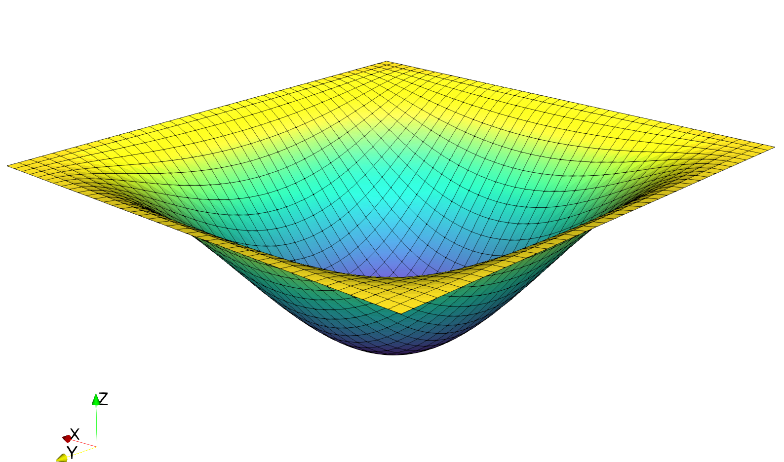

Reissner-Mindlin plate with Quadrilaterals¶
This program solves the Reissner-Mindlin plate equations on the unit square with uniform transverse loading and fully clamped boundary conditions.
It uses quadrilateral cells and selective reduced integration (SRI) to remove shear-locking issues in the thin plate limit. Both linear and quadratic interpolation are considered for the transverse deflection \(w\) and rotation \(\underline{\theta}\).
The solution for \(w\) in this demo will look as follows:
{kind=link}
Material parameters for isotropic linear elastic behavior are first defined:
from fenics import *
E = Constant(1e3)
nu = Constant(0.3)
Plate bending stiffness \(D=\dfrac{Eh^3}{12(1-\nu^2)}\) and shear stiffness \(F = \kappa Gh\) with a shear correction factor \(\kappa = 5/6\) for a homogeneous plate of thickness \(h\):
thick = Constant(1e-2)
D = E*thick**3/(1-nu**2)/12.
F = E/2/(1+nu)*thick*5./6.
The uniform loading \(f\) is scaled by the plate thickness so that the deflection converges to a constant value in the thin plate Love-Kirchhoff limit:
f = Constant(-thick**3)
The unit square mesh is divided in \(N\times N\) quadrilaterals:
N = 10
mesh = UnitSquareMesh.create(N, N, CellType.Type_quadrilateral)
Continuous interpolation using of degree \(d=\texttt{deg}\) is chosen for both deflection and rotation:
deg = 1
We = FiniteElement("Lagrange", mesh.ufl_cell(), deg)
Te = VectorElement("Lagrange", mesh.ufl_cell(), deg)
V = FunctionSpace(mesh,MixedElement([We,Te]))
Clamped boundary conditions on the lateral boundary are defined as:
def border(x, on_boundary):
return on_boundary
bc = [DirichletBC(V,Constant((0.,0.,0.)), border)]
Some useful functions for implementing generalized constitutive relations are now defined:
def strain2voigt(eps):
return as_vector([eps[0,0],eps[1,1],2*eps[0,1]])
def voigt2stress(S):
return as_tensor([[S[0],S[2]],[S[2],S[1]]])
def curv(u):
(w,theta) = split(u)
return sym(grad(theta))
def shear_strain(u):
(w,theta) = split(u)
return theta-grad(w)
def bending_moment(u):
DD = as_tensor([[D,nu*D,0],[nu*D,D,0],[0,0,D*(1-nu)/2.]])
return voigt2stress(dot(DD,strain2voigt(curv(u))))
def shear_force(u):
return F*shear_strain(u)
The contribution of shear forces to the total energy is under-integrated using a custom quadrature rule of degree \(2d-2\) i.e. for linear (\(d=1\)) quadrilaterals, the shear energy is integrated as if it were constant (1 Gauss point instead of 2x2) and for quadratic (\(d=2\)) quadrilaterals, as if it were quadratic (2x2 Gauss points instead of 3x3):
u = Function(V)
u_ = TestFunction(V)
du = TrialFunction(V)
dx_shear = dx(metadata={"quadrature_degree":2*deg-2})
L = f*u_[0]*dx
a = inner(bending_moment(u_),curv(du))*dx + dot(shear_force(u_),shear_strain(du))*dx_shear
We then solve for the solution and export the relevant fields to XDMF files
solve(a == L, u, bc)
(w,theta) = split(u)
Vw = FunctionSpace(mesh,We)
Vt = FunctionSpace(mesh,Te)
ww = Function(Vw, name="Deflection")
tt = Function(Vt, name="Rotation")
ww.assign(project(w, Vw))
tt.assign(project(theta, Vt))
file_results = XDMFFile("RM_results.xdmf")
file_results.parameters["flush_output"] = True
file_results.parameters["functions_share_mesh"] = True
file_results.write(ww, 0.)
file_results.write(tt, 0.)
The solution is compared to the Kirchhoff analytical solution:
print "Kirchhoff deflection:", -1.265319087e-3*float(f/D)
print "Reissner-Mindlin FE deflection:", min(ww.vector().get_local()) # point evaluation for quads
# is not implemented in fenics 2017.2